Barion Smart Gateway
A full product refresh of Barion's core payment gateway redesigning the end-to-end experience for merchants and consumers across Europe, at scale.
 Live
Barion demo gateway
Live
Barion demo gateway
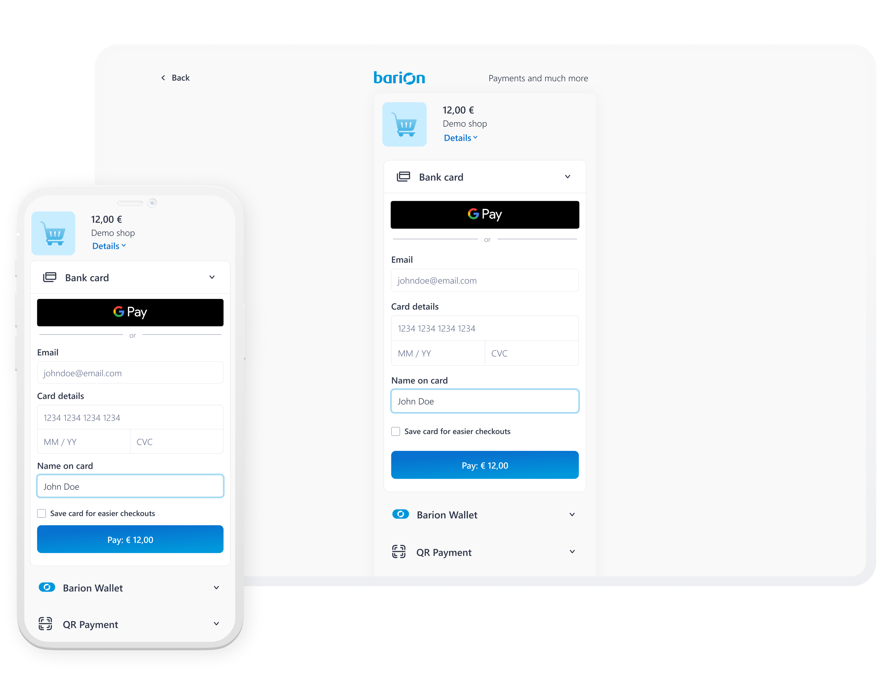
Summary
Barion Smart Gateway is Barion's payment product, powering checkouts for 20 000+ shops including brands like Yettel and O2.
I helped redesign the 15-year-old checkout experience to make payments faster, clearer, and more aligned with Barion's evolving design system.
I was responsible for:
- A full UX/UI redesign across the core payment flow, while keeping the existing journey and accordion structure intact.
- The redesign of key payment states, including card entry, alternative payment methods, success screens, and error handling.
- A cleaner payment experience that surfaced Apple Pay and Google Pay above the fold and reduced visual clutter.
- Merchant-facing customisation improvements, including background colour, button colour, logo placement, rounded UI styling, and dark mode.
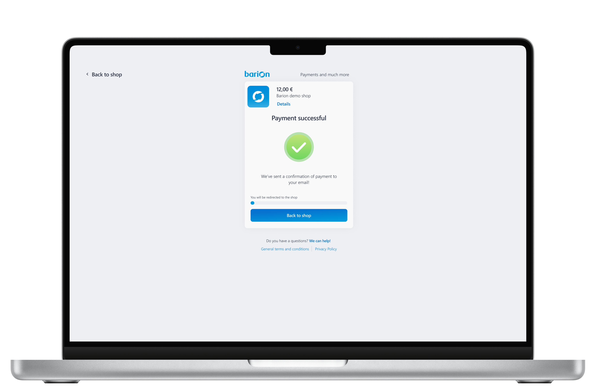
Problem
Poor mobile UX
The checkout experience was falling behind competitors where most transactions happened.
Hidden payment options
Alternatives like Google Pay were buried below the fold and easy to miss.
Fragmented interface
Inconsistent visual treatments made the product feel disjointed.
High cognitive load
UI clutter slowed users down and made the payment flow feel heavier.
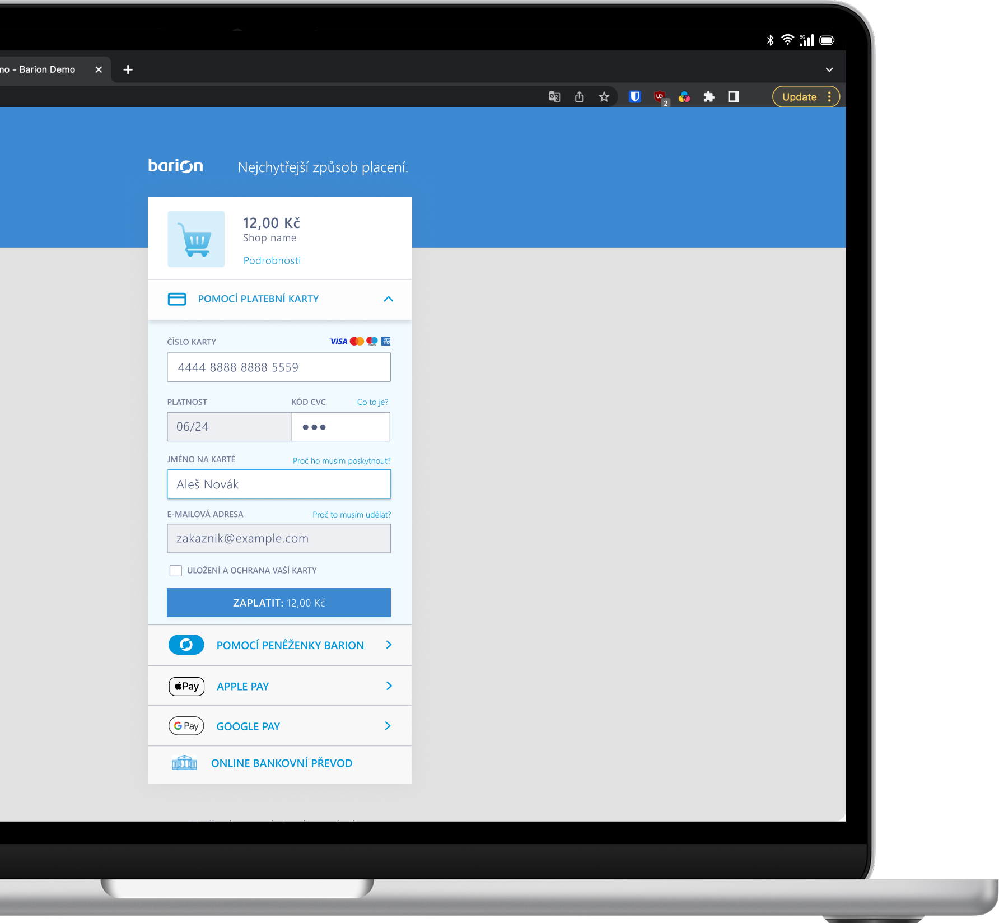
Process
- Conducted a heuristic analysis identifying three core issue categories: hidden payment options, visual inconsistencies, and interface clutter.
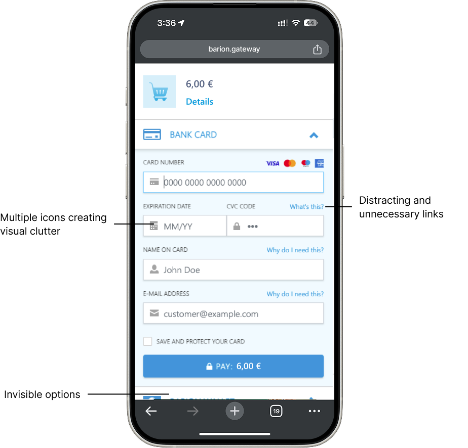
- Gathered customer and merchant feedback — users didn't know Google Pay was available; merchants wanted basic brand customisation without requiring Barion's development resources.
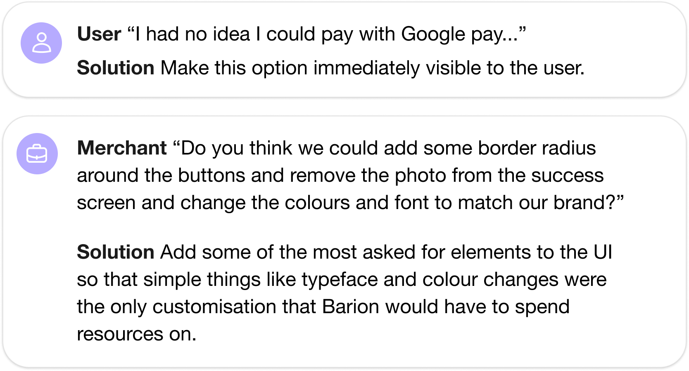
- Worked within defined constraints: retain the accordion menu format and existing user journey while solving immediate UX issues.
- Evaluated wireframe options before committing to a direction that minimised layout disruption.
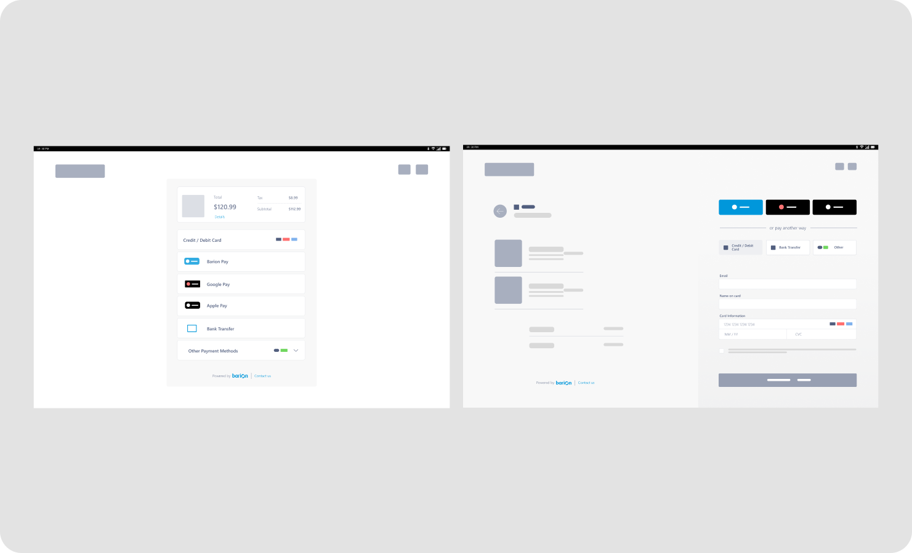
Solution
Surfaced Apple Pay and Google Pay immediately at the top of the payment form, before card entry fields.
This contributed to the greatest difference in our reduced session duration.
Decluttered the input area by removing distracting icons, unnecessary helper links, and redundant labels.
We trusted our users to be able to gauge meaning through input labels and reduced friction by removing helpers. In addition, we improved UX by allowing card provider logos to appear when the user typed into the card information input field. This way, we stayed compliant and reduced clutter.
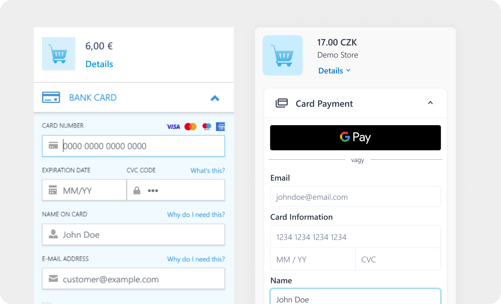
Unified all UI components under a consistent visual language aligned with the Barion design system.
The Barion Design System was an ongoing project at this point and this project gave us the perfect opportunity to bounce ideas and come up with a visual system that we were happy with and that would scale efficiently.
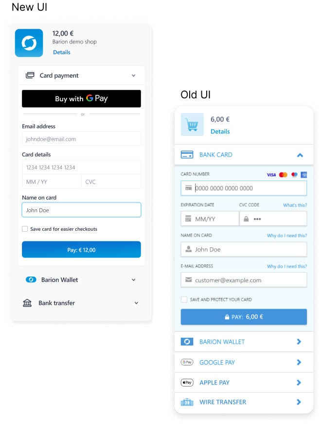
Introduced rounded corners throughout for a softer, more modern aesthetic.
This simple but impactful change did a lot for speaking our brand language through the UI.
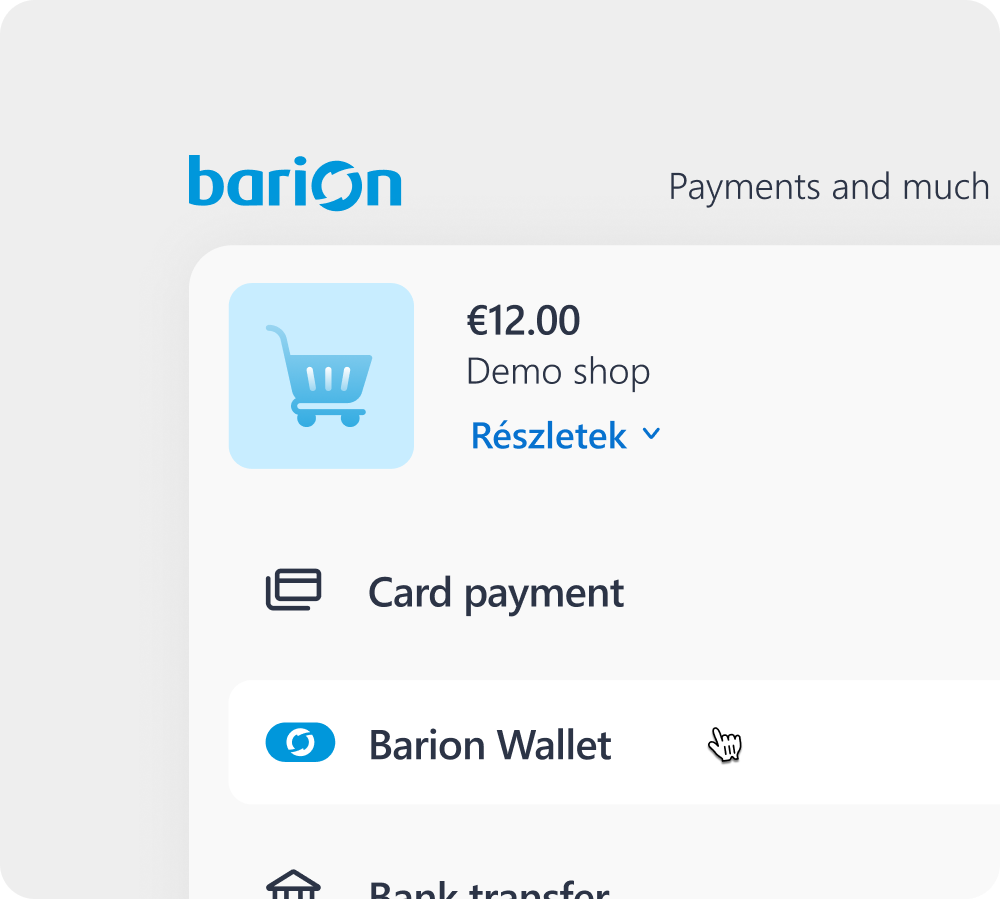
Redesigned the success and error states. Clean success screens, prominent error indicators to prevent costly mistakes.
Success and error screens stopped being something to guess, and started defining issues more clearly.
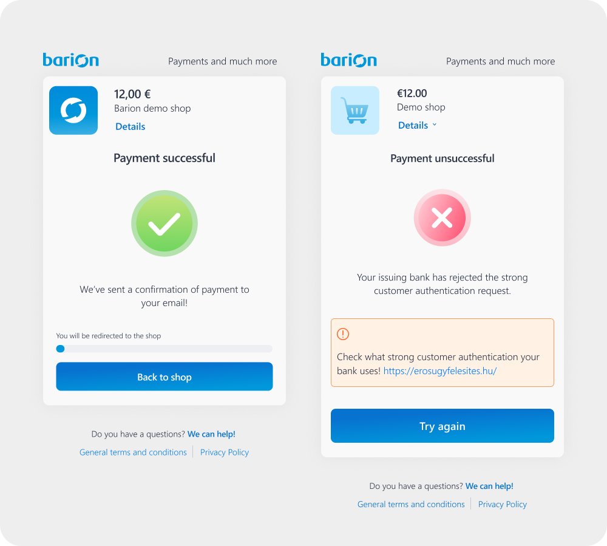
Made sure that the UI was pliable for easy customisation by merchants.
Our refined branding now conveys a more subtle presence, empowering our merchants to fully express their unique colors. This enhances the shopping experience, making it feel more seamless and trustworthy.
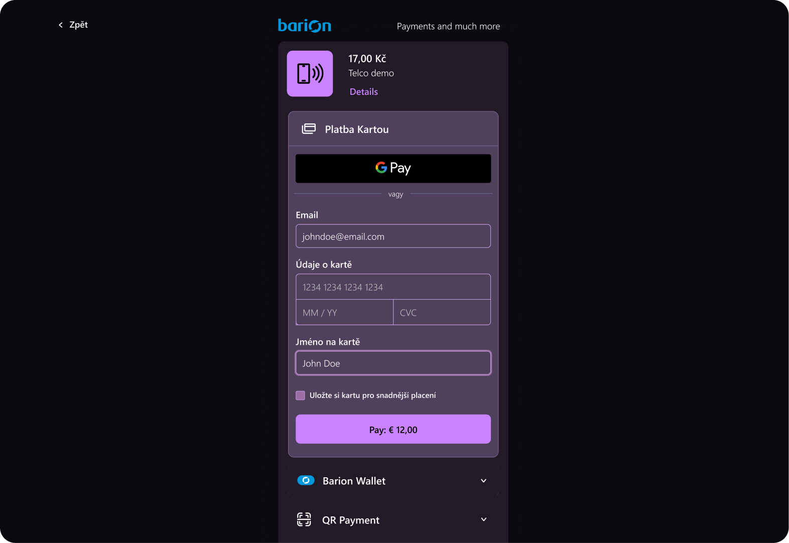
Delivered a full dark mode as a final feature addition.
This made developers everywhere very happy!
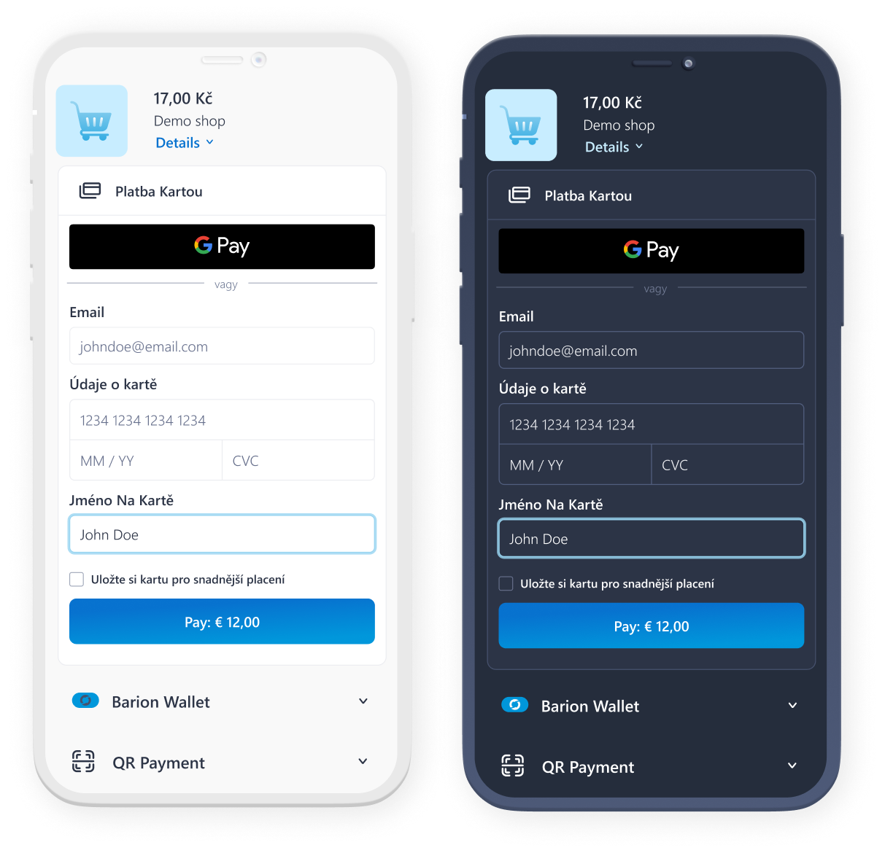
Outcome
94% Customer Satisfaction Score and 0.5s improvement in Average Session Duration
- We saw a very noticeable spike in Google and Apple Pay, which resulted in much quicker conversion.
- Users were able to identify clearly when running into issues.
- Our feedback forms received a 94% favourable response towards the new design.
- There are further improvements that need to be made to make the user experience seamless and to help the gateway scale better in the future, but the project goals were met and exceeded.